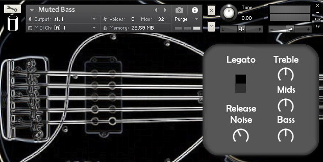

Muted Bass

Muted Bass is made sampling a Sterling Ray 35 played palm muted and DI, ready to be plugged into your favourite signal chain. Perfect for jazz, funk, edm and pop, the round and rich tone of this instrument will be a nice touch in many occasions.
Features:
- 492 high-quality samples;
- 2 velocity layers;
- 4 round robins;
- Scripted legato;
- Adjustable and intelligent Release Triggers;
- Dead notes and slap noises.
Muted Bass is compatible with Kontakt 5.8.1 and above, and requires the full version of Kontakt.
Do you have a demo featuring this product? Let us hear it!